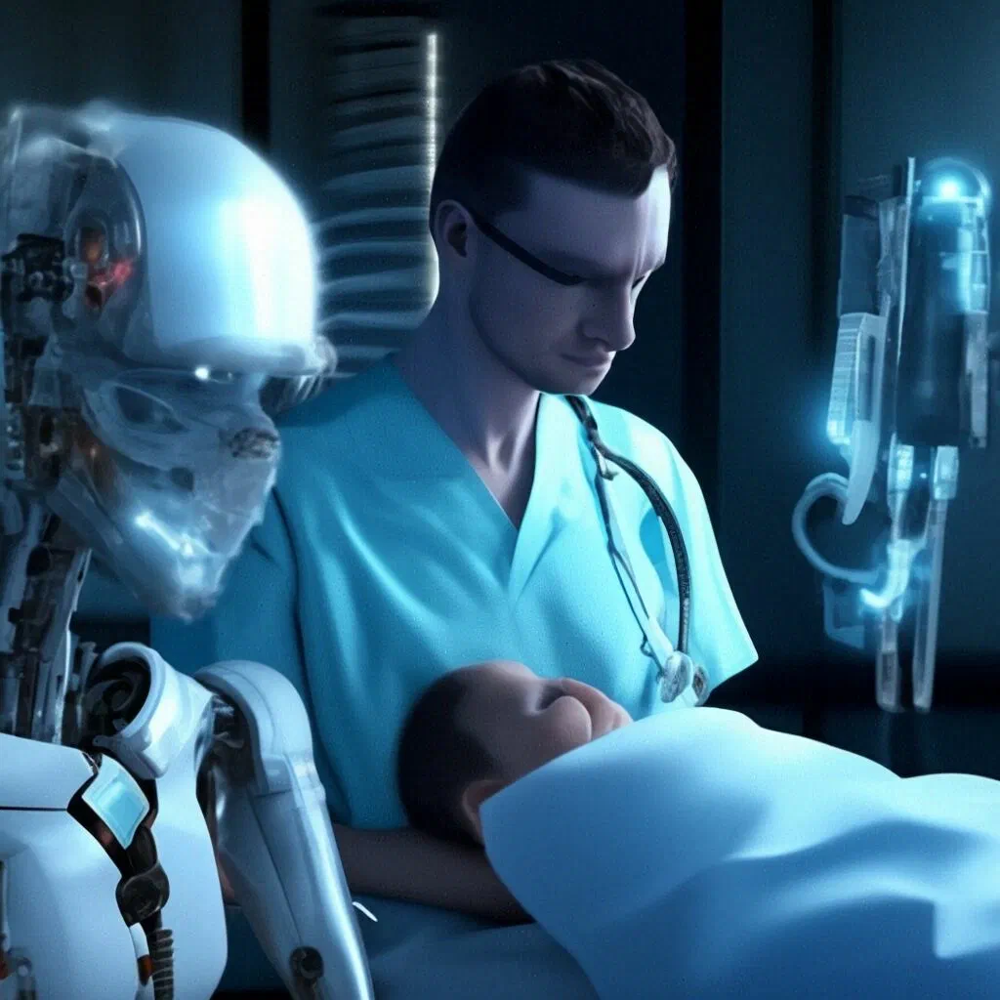
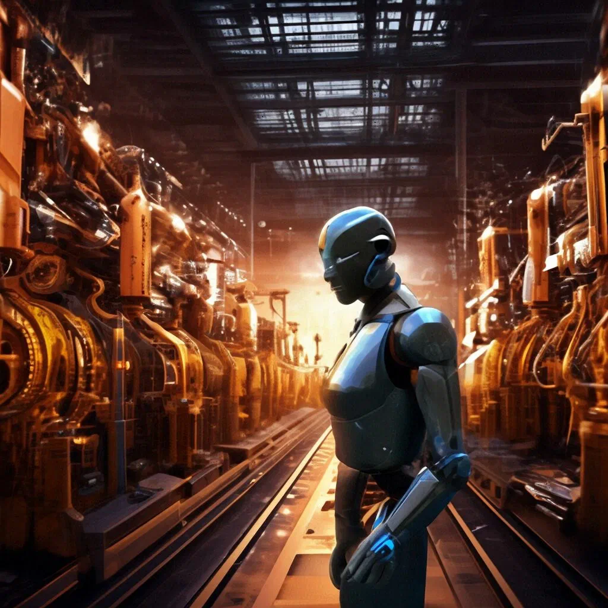
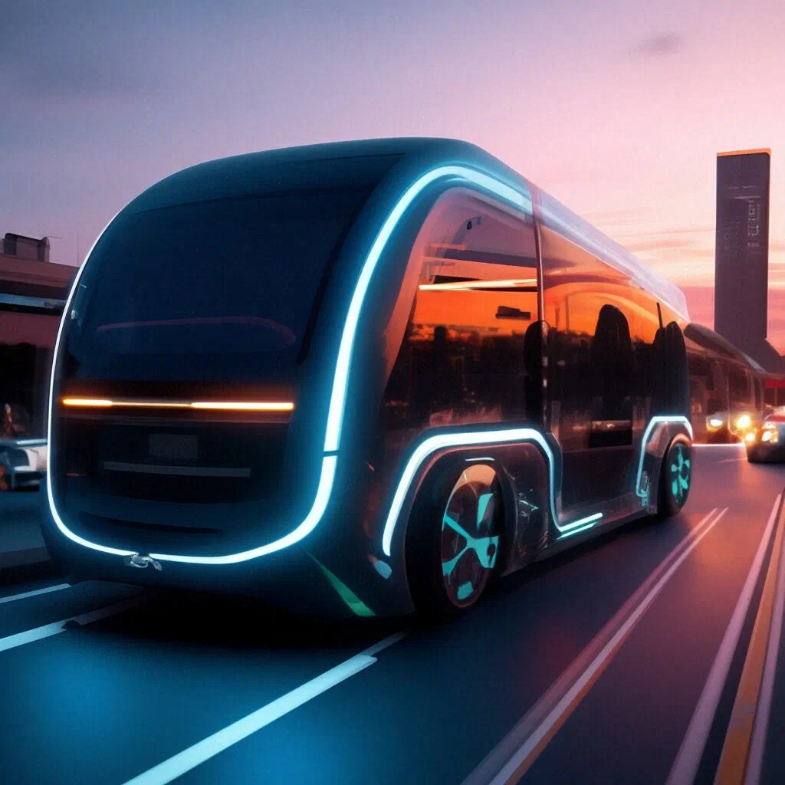

Понятие искусственного интеллекта
Искусственный интеллект - это раздел информатики, занимающийся
созданием интеллектуальных компьютерных систем. Принципы работы ИИ
основаны на имитации процессов, происходящих в человеческом мозге.
Один из основных принципов работы ИИ - обучение на основе данных.
Это означает, что система анализирует большое количество
информации и на основе этого анализа формирует свои выводы и
принимает решения.
Еще один принцип - использование алгоритмов машинного обучения.
Эти алгоритмы позволяют системе автоматически улучшать свои навыки
и знания на основе опыта.
Также важным принципом работы ИИ является использование нейронных
сетей. Нейронные сети имитируют работу мозга, позволяя системе
обрабатывать большие объемы данных и принимать решения на основе
этих данных.
Классификация ИИ
Существует несколько различных способов классификации искусственного
интеллекта (ИИ) в зависимости от уровня сложности. Один из них -
деление на слабый, средний и сильный ИИ.
Слабый ИИ (также известный как узкоспециализированный ИИ) - это
системы, которые могут выполнять только одну задачу, например,
распознавание речи или распознавание лиц. Эти системы обычно
используют алгоритмы машинного обучения, такие как нейронные сети,
для обучения на больших наборах данных.
Средний ИИ (также известный как ограниченный ИИ) - это системы, которые способны выполнять несколько задач, но только в определенной области. Например, медицинские диагностические системы, которые могут анализировать медицинские изображения и давать рекомендации по лечению.
Сильный ИИ (также известный как общий ИИ) - это системы, которые способны решать широкий спектр задач и взаимодействовать с окружающей средой, как это делают люди. Эти системы могут обучаться на больших объемах данных и использовать алгоритмы машинного обучения для принятия решений на основе этих данных.
Области применения ИИ
Искусственный интеллект (ИИ) находит широкое применение в различных
областях:
Здравоохранение: ИИ используется для диагностики заболеваний,
прогнозирования эпидемий, разработки лекарств, персонализированной
медицины и анализа медицинских изображений.

Финансы: ИИ применяется для прогнозирования рыночных трендов,
управления рисками, выявления мошенничества, автоматизации
инвестиций и управления портфелем.
Производство и логистика: В области производства ИИ помогает оптимизировать процессы, улучшать качество продукции, прогнозировать сбои в оборудовании, а также управлять логистикой.

Транспорт: В транспортной отрасли ИИ применяют для разработки автономных автомобилей, управления городским трафиком, улучшения безопасности и оптимизации маршрутов.

Образование: ИИ используется для создания индивидуализированных программ обучения, автоматизации тестирования, поддержки преподавателей и административных процессов.
Климат и окружающая среда: ИИ применяется для прогнозирования изменений климата, анализа датчиков для оценки загрязнения воздуха и воды, контроля за изменением растительности и создания инновационных решений для устойчивого развития.